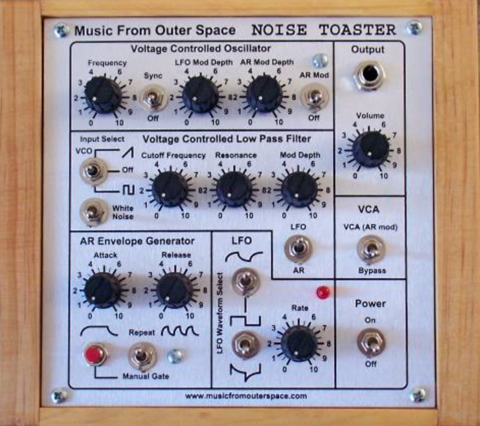

Simple, full analog noise synth.

The MFOS Noise Toaster circuit consists of seven main components: a voltage controlled oscillator (VCO), a white noise generator, a voltage controlled low pass filter (VCF), a low frequency oscillator (LFO), a simple AR envelope generator (AREG), a simple voltage controlled amplifier (VCA), and a one watt amplifier that drives a small speaker. The unit is powered by one nine volt battery and due to the low current drain of the LM324 (Lo-Power Quad Op Amp) it gets a lot of miles out of a nine volt battery.
All DB data
- Name: Noise Toaster
- Author: Ray Wilson
- Link: http://musicfromouterspace.com/index.php?MAINTAB=SYNTHDIY&VPW=1910&VPH=871
- Demo: https://www.youtube.com/watch?v=smFKx6gfOd0
- Picture: ../pics/noise-toaster.jpg
- Description: Simple, full analog noise synth.
- Notes: The MFOS Noise Toaster circuit consists of seven main components: a voltage controlled oscillator (VCO), a white noise generator, a voltage controlled low pass filter (VCF), a low frequency oscillator (LFO), a simple AR envelope generator (AREG), a simple voltage controlled amplifier (VCA), and a one watt amplifier that drives a small speaker. The unit is powered by one nine volt battery and due to the low current drain of the LM324 (Lo-Power Quad Op Amp) it gets a lot of miles out of a nine volt battery.
- Artifacts: {“Schematic”=>true}{“PCB”=>false}{“BOM”=>true}{“FW”=>false}{“Docs”=>true}{“Enclosure”=>false}
- Tags: AnalogMonophonic
- Level: Intermediate
{kind=link}